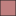

<!doctype html>
<html lang="en">
    <head>
        <meta charset="utf-8">
        <meta http-equiv="X-UA-Compatible" content="IE=edge">
        <meta name="viewport" content="initial-scale=1,user-scalable=no,maximum-scale=1,width=device-width">
        <meta name="mobile-web-app-capable" content="yes">
        <meta name="apple-mobile-web-app-capable" content="yes">
        <link rel="stylesheet" href="css/leaflet.css">
        <link rel="stylesheet" href="css/qgis2web.css"><link rel="stylesheet" href="css/fontawesome-all.min.css">
        <link rel="stylesheet" href="css/leaflet-search.css">
        <style>
        #map {
            width: 1037px;
            height: 857px;
        }
        </style>
        <title></title>
    </head>
    <body>
        <div id="map">
        </div>
        <script src="js/qgis2web_expressions.js"></script>
        <script src="js/leaflet.js"></script>
        <script src="js/leaflet.rotatedMarker.js"></script>
        <script src="js/leaflet.pattern.js"></script>
        <script src="js/leaflet-hash.js"></script>
        <script src="js/Autolinker.min.js"></script>
        <script src="js/rbush.min.js"></script>
        <script src="js/labelgun.min.js"></script>
        <script src="js/labels.js"></script>
        <script src="js/leaflet-search.js"></script>
        <script src="data/dtto27_local_09_1.js"></script>
        <script src="data/Datos_metas_dtto27_09_2.js"></script>
        <script>
        var highlightLayer;
        function highlightFeature(e) {
            highlightLayer = e.target;

            if (e.target.feature.geometry.type === 'LineString') {
              highlightLayer.setStyle({
                color: '#ffff00',
              });
            } else {
              highlightLayer.setStyle({
                fillColor: '#ffff00',
                fillOpacity: 1
              });
            }
        }
        var map = L.map('map', {
            zoomControl:true, maxZoom:28, minZoom:1
        }).fitBounds([[19.309002275032118,-99.01884651104194],[19.36382434108056,-98.94893259051678]]);
        var hash = new L.Hash(map);
        map.attributionControl.setPrefix('<a href="https://github.com/tomchadwin/qgis2web" target="_blank">qgis2web</a> &middot; <a href="https://leafletjs.com" title="A JS library for interactive maps">Leaflet</a> &middot; <a href="https://qgis.org">QGIS</a>');
        var autolinker = new Autolinker({truncate: {length: 30, location: 'smart'}});
        var bounds_group = new L.featureGroup([]);
        function setBounds() {
        }
        map.createPane('pane_GoogleMaps_0');
        map.getPane('pane_GoogleMaps_0').style.zIndex = 400;
        var layer_GoogleMaps_0 = L.tileLayer('http://mt1.google.com/vt/lyrs=m&x={x}&y={y}&z={z}', {
            pane: 'pane_GoogleMaps_0',
            opacity: 0.513,
            attribution: '',
            minZoom: 1,
            maxZoom: 28,
            minNativeZoom: 0,
            maxNativeZoom: 22
        });
        layer_GoogleMaps_0;
        map.addLayer(layer_GoogleMaps_0);
        function pop_dtto27_local_09_1(feature, layer) {
            layer.on({
                mouseout: function(e) {
                    for (i in e.target._eventParents) {
                        e.target._eventParents[i].resetStyle(e.target);
                    }
                },
                mouseover: highlightFeature,
            });
            var popupContent = '<table>\
                    <tr>\
                        <td colspan="2">' + (feature.properties['distrito_l'] !== null ? autolinker.link(feature.properties['distrito_l'].toLocaleString()) : '') + '</td>\
                    </tr>\
                </table>';
            layer.bindPopup(popupContent, {maxHeight: 400});
        }

        function style_dtto27_local_09_1_0() {
            return {
                pane: 'pane_dtto27_local_09_1',
                opacity: 1,
                color: 'rgba(219,35,35,1.0)',
                dashArray: '',
                lineCap: 'butt',
                lineJoin: 'miter',
                weight: 1.0, 
                fill: true,
                fillOpacity: 1,
                fillColor: 'rgba(213,180,60,0.0)',
                interactive: true,
            }
        }
        map.createPane('pane_dtto27_local_09_1');
        map.getPane('pane_dtto27_local_09_1').style.zIndex = 401;
        map.getPane('pane_dtto27_local_09_1').style['mix-blend-mode'] = 'normal';
        var layer_dtto27_local_09_1 = new L.geoJson(json_dtto27_local_09_1, {
            attribution: '',
            interactive: true,
            dataVar: 'json_dtto27_local_09_1',
            layerName: 'layer_dtto27_local_09_1',
            pane: 'pane_dtto27_local_09_1',
            onEachFeature: pop_dtto27_local_09_1,
            style: style_dtto27_local_09_1_0,
        });
        bounds_group.addLayer(layer_dtto27_local_09_1);
        map.addLayer(layer_dtto27_local_09_1);
        function pop_Datos_metas_dtto27_09_2(feature, layer) {
            layer.on({
                mouseout: function(e) {
                    for (i in e.target._eventParents) {
                        e.target._eventParents[i].resetStyle(e.target);
                    }
                },
                mouseover: highlightFeature,
            });
            var popupContent = '<table>\
                    <tr>\
                        <th scope="row">SECCIÓN</th>\
                        <td>' + (feature.properties['SECCIÓN'] !== null ? autolinker.link(feature.properties['SECCIÓN'].toLocaleString()) : '') + '</td>\
                    </tr>\
                    <tr>\
                        <td colspan="2"><strong>MORENA-PVEM-PT</strong><br />' + (feature.properties['MORENA-PVEM-PT'] !== null ? autolinker.link(feature.properties['MORENA-PVEM-PT'].toLocaleString()) : '') + '</td>\
                    </tr>\
                    <tr>\
                        <td colspan="2"><strong>PAN-PRI-PRD</strong><br />' + (feature.properties['PAN-PRI-PRD'] !== null ? autolinker.link(feature.properties['PAN-PRI-PRD'].toLocaleString()) : '') + '</td>\
                    </tr>\
                    <tr>\
                        <td colspan="2"><strong>meta</strong><br />' + (feature.properties['meta'] !== null ? autolinker.link(feature.properties['meta'].toLocaleString()) : '') + '</td>\
                    </tr>\
                </table>';
            layer.bindPopup(popupContent, {maxHeight: 400});
        }

        function style_Datos_metas_dtto27_09_2_0(feature) {
            if (feature.properties[' "MORENA-PT"  /  "VTE" *100'] >= 50.000000 && feature.properties[' "MORENA-PT"  /  "VTE" *100'] <= 56.510203 ) {
                return {
                pane: 'pane_Datos_metas_dtto27_09_2',
                opacity: 1,
                color: 'rgba(35,35,35,0.646)',
                dashArray: '',
                lineCap: 'butt',
                lineJoin: 'miter',
                weight: 1.0, 
                fill: true,
                fillOpacity: 1,
                fillColor: 'rgba(255,255,255,0.646)',
                interactive: true,
            }
            }
            if (feature.properties[' "MORENA-PT"  /  "VTE" *100'] >= 56.510203 && feature.properties[' "MORENA-PT"  /  "VTE" *100'] <= 59.940864 ) {
                return {
                pane: 'pane_Datos_metas_dtto27_09_2',
                opacity: 1,
                color: 'rgba(35,35,35,0.646)',
                dashArray: '',
                lineCap: 'butt',
                lineJoin: 'miter',
                weight: 1.0, 
                fill: true,
                fillOpacity: 1,
                fillColor: 'rgba(223,191,191,0.646)',
                interactive: true,
            }
            }
            if (feature.properties[' "MORENA-PT"  /  "VTE" *100'] >= 59.940864 && feature.properties[' "MORENA-PT"  /  "VTE" *100'] <= 62.823235 ) {
                return {
                pane: 'pane_Datos_metas_dtto27_09_2',
                opacity: 1,
                color: 'rgba(35,35,35,0.646)',
                dashArray: '',
                lineCap: 'butt',
                lineJoin: 'miter',
                weight: 1.0, 
                fill: true,
                fillOpacity: 1,
                fillColor: 'rgba(192,128,128,0.646)',
                interactive: true,
            }
            }
            if (feature.properties[' "MORENA-PT"  /  "VTE" *100'] >= 62.823235 && feature.properties[' "MORENA-PT"  /  "VTE" *100'] <= 66.062114 ) {
                return {
                pane: 'pane_Datos_metas_dtto27_09_2',
                opacity: 1,
                color: 'rgba(35,35,35,0.646)',
                dashArray: '',
                lineCap: 'butt',
                lineJoin: 'miter',
                weight: 1.0, 
                fill: true,
                fillOpacity: 1,
                fillColor: 'rgba(160,64,64,0.646)',
                interactive: true,
            }
            }
            if (feature.properties[' "MORENA-PT"  /  "VTE" *100'] >= 66.062114 && feature.properties[' "MORENA-PT"  /  "VTE" *100'] <= 75.279107 ) {
                return {
                pane: 'pane_Datos_metas_dtto27_09_2',
                opacity: 1,
                color: 'rgba(35,35,35,0.646)',
                dashArray: '',
                lineCap: 'butt',
                lineJoin: 'miter',
                weight: 1.0, 
                fill: true,
                fillOpacity: 1,
                fillColor: 'rgba(128,0,0,0.646)',
                interactive: true,
            }
            }
        }
        map.createPane('pane_Datos_metas_dtto27_09_2');
        map.getPane('pane_Datos_metas_dtto27_09_2').style.zIndex = 402;
        map.getPane('pane_Datos_metas_dtto27_09_2').style['mix-blend-mode'] = 'normal';
        var layer_Datos_metas_dtto27_09_2 = new L.geoJson(json_Datos_metas_dtto27_09_2, {
            attribution: '',
            interactive: true,
            dataVar: 'json_Datos_metas_dtto27_09_2',
            layerName: 'layer_Datos_metas_dtto27_09_2',
            pane: 'pane_Datos_metas_dtto27_09_2',
            onEachFeature: pop_Datos_metas_dtto27_09_2,
            style: style_Datos_metas_dtto27_09_2_0,
        });
        bounds_group.addLayer(layer_Datos_metas_dtto27_09_2);
        map.addLayer(layer_Datos_metas_dtto27_09_2);
        var baseMaps = {};
        L.control.layers(baseMaps,{'Datos_metas_dtto27_09<br /><table><tr><td style="text-align: center;"></td><td>50 - 56.5</td></tr><tr><td style="text-align: center;"></td><td>56.5 - 59.9</td></tr><tr><td style="text-align: center;"></td><td>59.9 - 62.8</td></tr><tr><td style="text-align: center;"></td><td>62.8 - 66.1</td></tr><tr><td style="text-align: center;"></td><td>66.1 - 75.3</td></tr></table>': layer_Datos_metas_dtto27_09_2,' dtto27_local_09': layer_dtto27_local_09_1,"Google Maps": layer_GoogleMaps_0,},{collapsed:false}).addTo(map);
        setBounds();
        map.addControl(new L.Control.Search({
            layer: layer_Datos_metas_dtto27_09_2,
            initial: false,
            hideMarkerOnCollapse: true,
            propertyName: 'SECCIÓN'}));
        document.getElementsByClassName('search-button')[0].className +=
         ' fa fa-binoculars';
        </script>
    </body>
</html>
